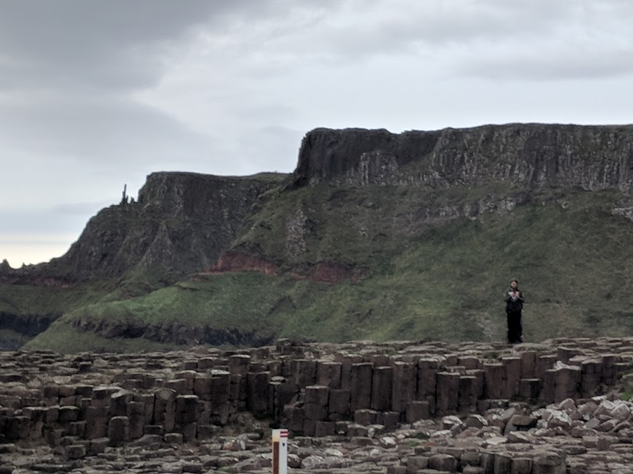

Nuala here. I will be joyously starting in the daytime January 2019 class. I enjoy living in Hawthorne/Division neighborhood with my partner Will, teen daughter Raven, a snake named Willow, and a currently empty fish tank. The plan is to get fish this month and baby chicks next month.
I have dual Irish/US citizenship so I travel back and forth from Ireland regularly. Truly all travel appeals to me.
My personal interests are languages, gaming, movies, writing/reading, biking, cafe culture, hacking, and music jamming. Although I am alarmingly bad at disc golf, I still enjoy playing it.
The reason that I wanted to take the Epicodus class is to beef up my coding skills, so that I can be more efficient at working with companies and non-profits. I used to code a long time ago, and enjoyed it in the fascinating/frustrating/fulfilling way that programing can be. I am amazed that much of the logic follows through and there are great tools like editors and Github. However, the jumping and getting it done eludes me, as I seem to be missing some key elements.
Nuala is an Economist and Entrepreneur focusing on practical activism. Her background is in tech, activism (disability, feminism, GLBT, environment), and behavioral economics. She divides her time between her two countries of the United States and Ireland. Nuala Gray is an original Hacker and tech Nerd, who is now an Economist, Entrepreneur and as always, a not-so-secret Activist. She has worked as a consultant for many years in tech, economics, and activism. Nuala’s background in tech, business, economics, and behavioral science allows her to merge these fields for efficient and practical workshops. This past year Nuala has given workshops at Civic Hall (NYC), Platform Cooperativism (NYC), and Aspiration Dev Summit(Oakland). She did speaker consulting at Enspiral Open Society Open Source (Wellington, NZ) and DES2016(Madrid, Spain) as well as prepared study materials for MIT classes. She is a member of Ctrl-H (Portland, Oregon USA) and the Business Liaison for three Portland associations. She is the owner of sustainable green building business, Portland Oasis Currently (due to a changing political climate) she is sending out lots of live feeds of weekly protests, writing a book on Activist Burnout, and prepping for her next Behavioral Economics Study For fun, she likes to travel with her daughter, dance for the Revolution, and learn from others.
If you are a Writer or a Painter... If you just wish to get away from the hectic noise of modern life... If you wish for your children to discover a magical world of nature or history... If you don't wish to be surrounded by tourists and instead seek to experience a traditional Ireland... If you are drawn to the mythology of Celtic History...
This unique home could be exactly what you have been seeking: Your own retreat with private with lovely views from every room in the house. This place is a true retreat from hectic city life. Most Irish Rentals are on busy roads or an attached part of a complex. Here, the peace and quiet of bird song, or the wind in the trees, or perhaps a cow in the distance are the only noises that you will hear. This home is on the land of my ancestors. It is ancient here, surrounded by significant historic sites and dolmens. Marking pedestrian paths criss cross around the property to ancient treasures and gorgeous views. There has been much inspiration for writers here since Yeats wrote of the Terrible Beauty of Sligo. There is even an old school desk here that the American writer Raymond Carver wrote about as inspiration. Music has been played and Poems have been read here. Enjoy the solitude in nature on the side of the mountainside. Lovely views of mountains in the distance. Walk to Lough Arrow or Lough Bo for some fishing. Stop by Cromleach Lodge for a dinner or spa treatment. Hike to the Moytura Battlefield or the Labby Rock to experience some real live legends. Centrally located between Castlebaldwin, Riverstown, Sligo, Boyle/Carrick, and Ballymote. Travel to different Art and Music festivals through-out the region. Try out surfing on one day and travel to charming shopping the next day. Sweet house, built with love and with guests in mind. An eco-green remodel recently for a healthy interior. House is insulated and has double paned modern windows. Lots of new features like wood floors and beautiful wall colors. This house is furnished with many antique furnishings but modern beds, hot water, heat and kitchen. This house on a hill has a sitting room, dining room, and conservatory porch on the front of the house. The Sitting room with a tiled fireplace for turf or wood fires, two couches, and tables. There are puzzles and games for use as well as a radio/cd player. Or make your own music with the bodrain and tin whistles. Pull out dining room table can seat eight. Plenty of wine glasses and cocktail glasses for company as well as serving dishes. The conservatory is warm and snug and bright even when the weather is not. Curl up on the sectional couch with a cup of tea and a good book. Be inspired and sit at the desk to write your novel. This is the desk that The kitchen has all appliances including microwave, hot water pot and toaster. Kitchen has just been updated with storage fixtures and butcher block. Kitchen includes all the dishes, pots, pans, silverware etc to cook a big meal for guests. The Master Bedroom has a new Queen size bed, bureau, desk and a spacious closet. The second bedroom has room for two and a bureau and large closet. The third bedroom has a modern single bed, shelves, and a closet. There are extra mattresses which can be used in other parts of the house as well. Plenty of linens and towels available. Bathroom has a full soaking tub. Hairdryer, curling iron, and iron available for guest use. Books, Maps, and Tourist information. Front loader Washer and Dryer
Cheers,Nuala (pronounced NewLa/Not picky about pronouns)